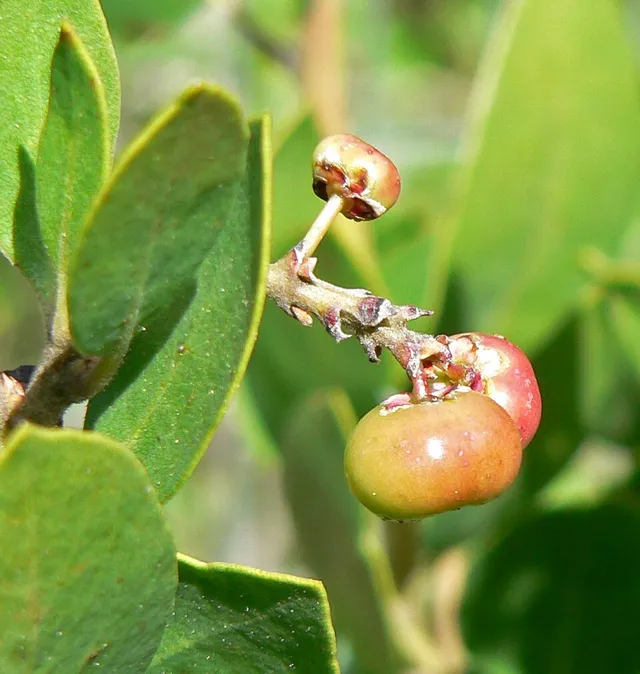

Drinks · Popular in California
Manzanita cider
Manzanita cider is made with wild manzanita berries, a favourite in California.

How do you make manzanita cider?
Crushed ripe berries steeped in cold water and strained, a Californian Native drink.
Wild ingredients
- Manzanita berries (Arctostaphylos manzanita): in season June to August
Watch the recipe

Video: Chad Zuber on YouTube